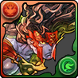
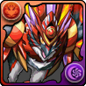
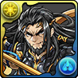
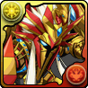
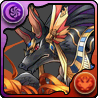

| Name and Picture | Leader Skills & Active Skills |
|---|---|
| Awoken Ares  |
Leader Skill: Fire atrribute cards HP x2, ATK x2. All attribute cards ATK x3 when reaching Fire & Wood combos
Active Skill: Change Water & Heart orbs to Fire orbs. Increase skyfall chance of Fire orbs by 15% for 2 turns. |
| Awoken Horus  |
Leader Skill: ATK x4 when attacking with 4 of following orb types: Fire, Water, Wood, Light & Dark. ATK x1 for each additional orb type, up to ATK x5 for all 5 matches. All attribute cards ATK x1.5, RCV x1.5 on the turn a skill is used.
Active Skill: Enhance Fire orbs. +6% per orb, up to +180% for full board. Increases time limit of orb movement by 2 seconds for 1 turn. |
| Awoken Izanagi  |
Leader Skill: ATK x7, reduce damage taken by 50% after matching Heal orbs in a cross formation. Balanced & God type cards RCV x2.
Active Skill: God & Balanced type cards ATK x2 for 1 turn. Deal 100000 Light damage to 1 enemy in exchange for reducing HP by 50%. Affected by enemy element and defense. |
| Awoken Ra  |
Leader Skill: ATK x5 when attacking with Fire, Water, Wood, Light & Dark orb types at the same time. God & Devil attribute cards ATK x2 on the turn a skill is used.
Active Skill: Deal 77777 damage to all enemies. Ignore enemy element and defense. Increase time limit of orb movement by 3 seconds for 1 turn. |
| Awoken Anubis  |
Leader Skill: ATK x4 at 9 combos. ATK x2 for each additional combo, up to ATK x10 at 12 combos. Dark attribute cards ATK 2.5x on the turn a skill is used.
Active Skill: Counter 5x damage taken with Dark for 4 turns. Change Wood, Jammer, Poison & Mortal Poison orbs to Dark orbs. |